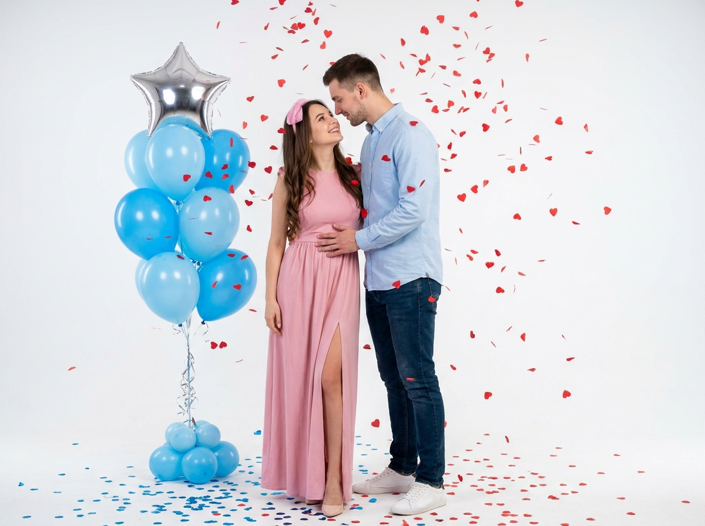
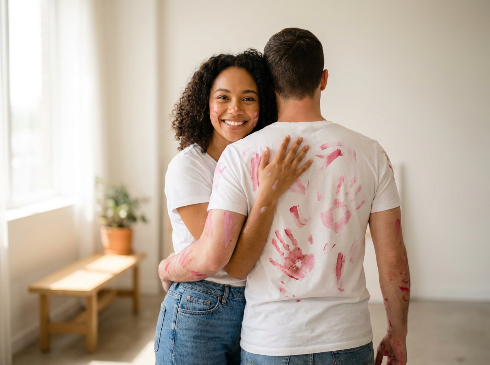
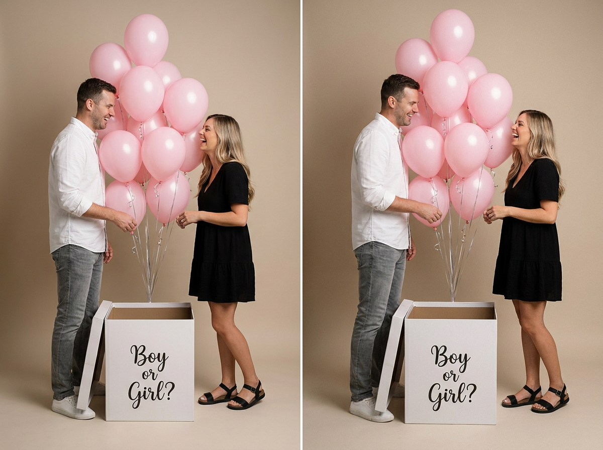
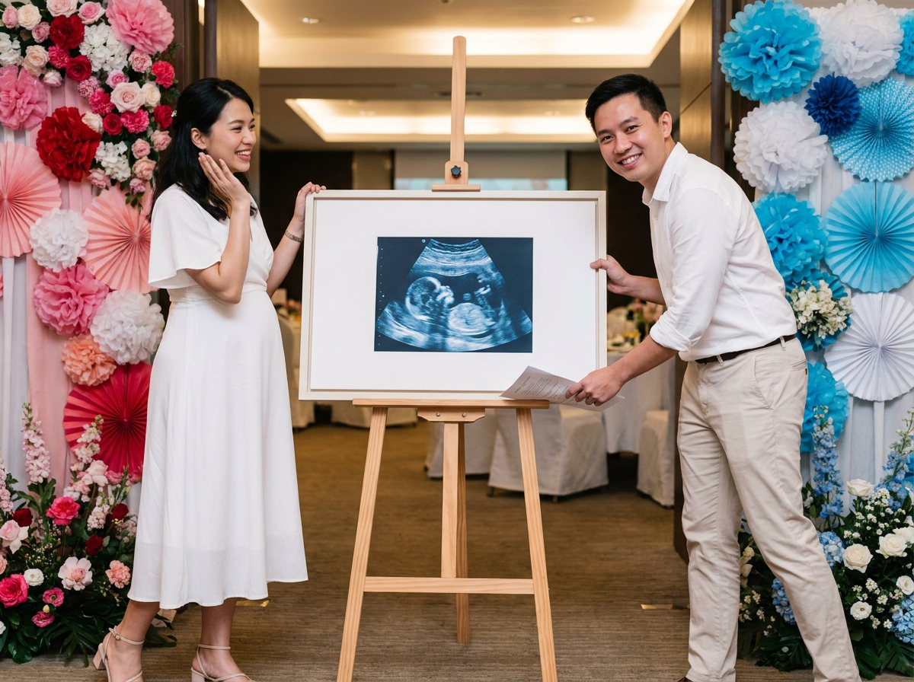
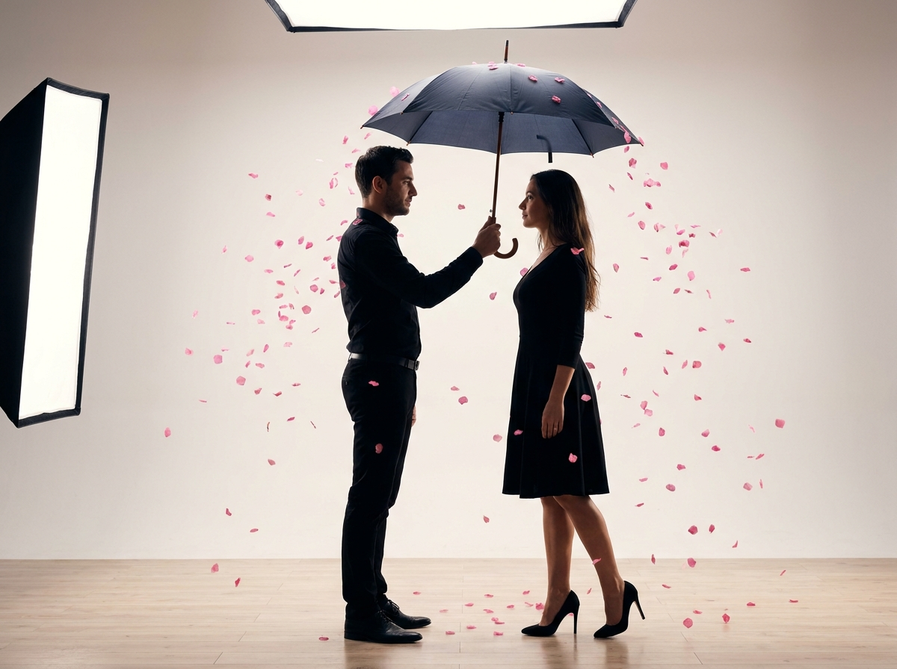
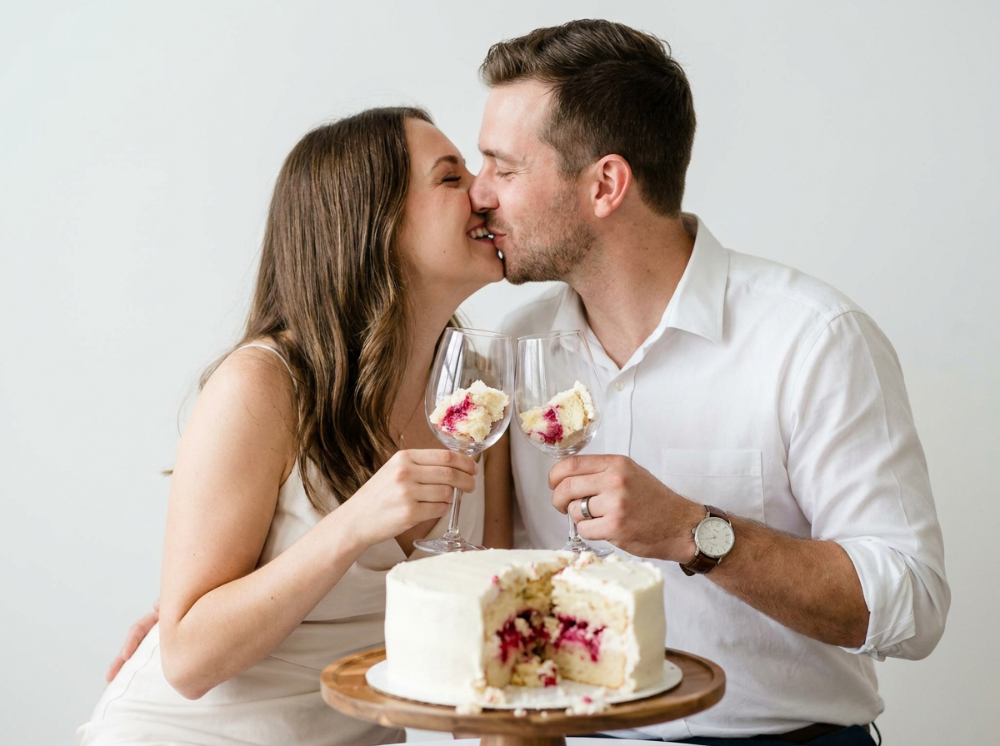
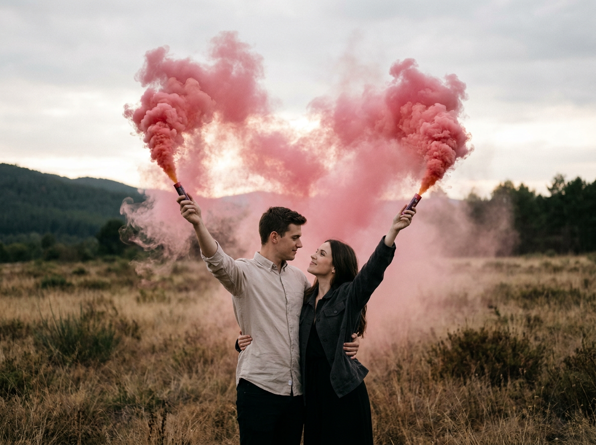
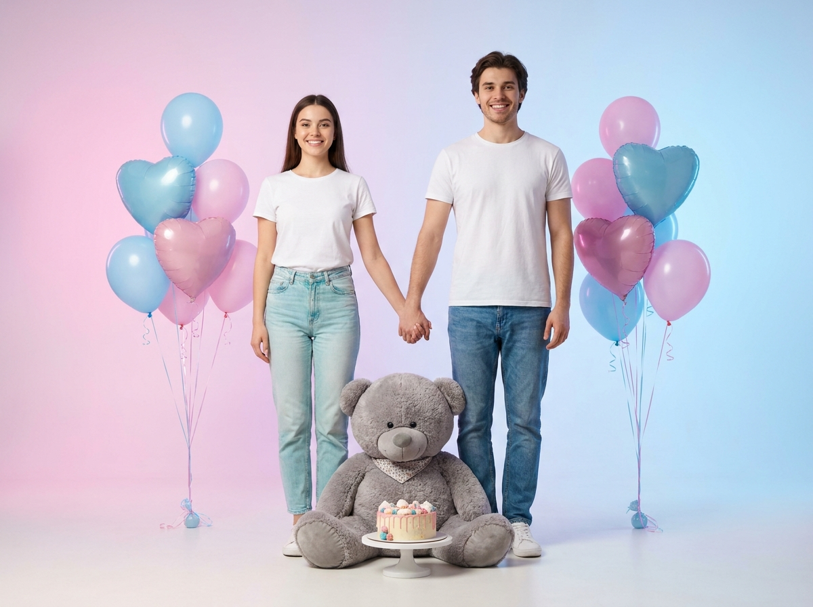
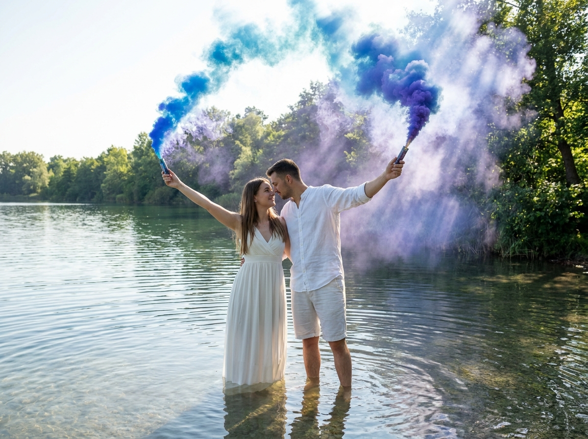
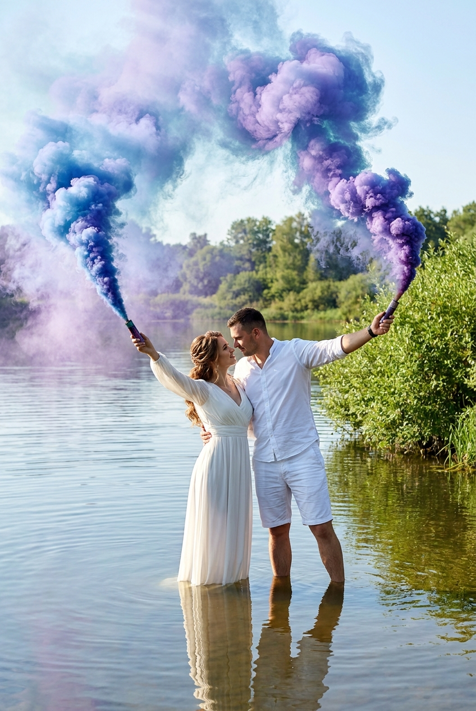

ИИ-фото Гендер Пати: 10 промптов для нейросети

Обычные фотографии с гендер-пати часто выглядят одинаково: шарики, белый фон и несколько неудачных дублей. Генерация помогает заранее придумать сцену, подобрать свет и получить эмоциональный кадр даже без студии, реквизита и сложной постановки.
В подборке - 10 сценариев для пары: от уютного снимка с тортом и УЗИ до поцелуя, дымового сердца, фотосессии у воды и динамичного взрыва конфетти. В каждом промпте есть одежда, поза, локация, настроение и параметры съёмки.
Как сгенерировать такое фото: пошагово
Нужен снимок анфас при ровном свете, лицо в кадре целиком, без тёмных очков и головных уборов. Разрешение от 1000 пикселей по короткой стороне. Чем чётче исходник, тем точнее модель повторит черты.
Выберите сценарий ниже и нажмите «Копировать» - текст уйдёт в буфер целиком, вместе с командой сохранения внешности. Эта команда стоит первой строкой и отвечает за то, чтобы на выходе было ваше лицо, а не случайное.
Кнопка «Сгенерировать» рядом с каждым промптом открывает модель в новой вкладке. Nano Banana Pro работает с референсом лица - в отличие от моделей, которые генерируют портрет с нуля и узнаваемость теряют.
Промпт - в поле ввода, портрет - через загрузку референса. Порядок значения не имеет, но без референса команда сохранения внешности работать не будет: модели нечего сохранять.
Для сторис и ленты берите 9:16, для превью и обложек - 4:3. Первый результат редко идеален: если поза или свет ушли не туда, поправьте соответствующую часть промпта и запустите заново. Обычно хватает двух-трёх итераций.
10 промптов для генерации
1. Пара в студии с сердечками
Строго сохранить внешность по загруженному референсу: черты лица, пропорции, мимику и текстуру кожи без изменений. Фотореалистичная вертикальная студийная фотография пары на gender party, кадр 9:16, оба человека в полный рост. Молодая пара стоит в светлой минималистичной студии с чистым белым фоном, мягким рассеянным светом, естественными тенями и лёгкой эстетикой editorial-съёмки. Мужчина находится справа, немного наклоняется к девушке, его лицо близко к её лицу, одна рука нежно касается её плеча или талии. Вокруг в воздухе разлетается множество красных сердечек-конфетти, на полу лежат голубые и алые блестящие конфетти. Слева расположена крупная композиция из голубых шаров и один серебристый шар в форме звезды. Репортажная вспышка, живая мимика, радость и нежность, романтичная праздничная атмосфера, натуральные пропорции тела, реалистичная текстура кожи и ткани.
2. Следы краски после объятий

Строго сохранить внешность по загруженному референсу: черты лица, пропорции, мимику и текстуру кожи без изменений. Фотореалистичный вертикальный кадр молодой пары в светлой минималистичной комнате. Девушка стоит лицом к камере и улыбается, мужчина обнимает её спиной к объективу. На обоих белые футболки и джинсы, на спине мужчины и руках пары заметны отпечатки ладоней и следы розово-красной краски, будто они только что устроили игривую фотосессию. Сохранить ощущение близости, лёгкости и доверия, показать тонкую фактуру хлопковой ткани и мазков краски. Мягкий рассеянный дневной свет падает сбоку, кожа выглядит естественно и тепло, фон ненавязчиво размывается в мягкое боке. Небольшая глубина резкости, объектив 50 мм, диафрагма f/1.8, ISO 200, аккуратная композиция без лишнего декора.
3. Розовые шары из коробки

Строго сохранить внешность по загруженному референсу: черты лица, пропорции, мимику и текстуру кожи без изменений. Фотографически реалистичная вертикальная студийная сцена с парой в полный рост. Мужчина в белой рубашке и серых джинсах, женщина в коротком чёрном платье и чёрных босоножках стоят напротив друг друга возле большого белого подарочного короба. На коробке крупно написано «Boy or Girl?», а изнутри вверх поднимается множество пастельно-розовых шаров на тонких серебристых лентах. Пара искренне смеётся и смотрит друг другу в глаза, эмоции живые, без постановочной натянутости. Нейтральный бежевый фон, мягкий тёплый рассеянный свет, естественные оттенки кожи, резкие лица и детали одежды, малая глубина резкости. Объектив 50 мм, f/2.8, лёгкая плёночная зернистость и кинематографичное настроение.
4. УЗИ на праздничном мольберте

Строго сохранить внешность по загруженному референсу: черты лица, пропорции, мимику и текстуру кожи без изменений. Фотореалистичная интерьерная сцена в стиле праздничной художественной церемонии. В центре на треноге стоит большой горизонтальный белый холст в рамке, на нём размещено изображение УЗИ ребёнка в голубых тонах. Слева женщина в белом платье средней длины из лёгкой струящейся ткани, с короткими или облегающими рукавами и аккуратными туфлями на тонких ремешках. Она повернута боком к мольберту, улыбается и держит руку возле лица в жесте «поправляю» или «передаю жест». Справа мужчина в белой рубашке и светлых брюках слегка наклонён к холсту, смотрит на женщину с радостью и ожиданием. Праздничный декор на заднем плане, тёплый мягкий свет, чистая композиция, естественная мимика, спокойные натуральные цвета, семейная атмосфера.
5. Розовый дождь под зонтом

Строго сохранить внешность по загруженному референсу: черты лица, пропорции, мимику и текстуру кожи без изменений. Фотореалистичный вертикальный полнофигурный кадр в студии на светлом бесшовном фоне с деревянным полом. Мужчина в чёрной одежде держит над женщиной тёмный зонт, а женщина в чёрном платье и высоких каблуках стоит рядом под его защитой. Вокруг пары происходит динамичный взрыв розовых лепестков-конфетти, каждый лепесток словно остановлен высокоскоростной вспышкой. Использовать мягкий боковой и верхний свет от софтбоксов, а также тонкий контровой источник, отделяющий силуэты от фона. Тёплые натуральные оттенки кожи, высокая детализация, художественный контраст, лёгкое размытие заднего плана. Параметры съёмки: объектив 85 мм, f/2.8, выдержка 1/500 с, ISO 200.
6. Торт и снимки УЗИ

Строго сохранить внешность по загруженному референсу: черты лица, пропорции, мимику и текстуру кожи без изменений. Фотореалистичная интимная студийная сцена: пара в белых футболках и светлых джинсах сидит по разные стороны от маленького белого торта. Десерт установлен на деревянной подложке, украшен кремовыми розетками и золотым топпером с надписью «Oh Baby». Вокруг торта разложены чёрно-белые снимки УЗИ, они заметны в переднем плане и создают личную историю ожидания ребёнка. Оба человека сидят непринуждённо, слегка повернувшись друг к другу, в кадре ощущаются нежность и спокойная радость. Однотонный белый фон, мягкий рассеянный студийный свет, тёплая естественная палитра, минимум теней, реалистичная текстура одежды и крема. Неглубокая глубина резкости, объектив около 35 мм.
7. Поцелуй с начинкой торта

Строго сохранить внешность по загруженному референсу: черты лица, пропорции, мимику и текстуру кожи без изменений. Фотореалистичная вертикальная студийная фотография пары в стиле семейной фотосессии. Мужчина и женщина наклоняются друг к другу и нежно целуются крупным планом, их лица выражают счастье и волнение. Мужчина в белой рубашке с коротким или закатанным рукавом, на запястье классические часы, на пальце небольшое кольцо. На женщине белое праздничное платье или аккуратный домашний образ, естественный макияж, ухоженная кожа и кольцо на пальце. На переднем плане расположен круглый торт на поворотном столике или рядом с рукой пары: снаружи он покрыт белым кремом, а внутри яркая розово-красная начинка, открытая для gender reveal. Мягкий студийный свет, чистый фон, натуральные оттенки кожи, высокая детализация, романтичная семейная атмосфера.
8. Дымовое сердце в поле

Строго сохранить внешность по загруженному референсу: черты лица, пропорции, мимику и текстуру кожи без изменений. Фотореалистичная кинематографичная съёмка на природе: молодая пара стоит среди сухой травы и кустарника на открытом поле, вокруг лёгкий ветер и естественная спокойная атмосфера. Парень в светлой рубашке или куртке с закатанными рукавами держит над головой дымовую шашку, из неё поднимается густой розово-алый дым. Девушка в тёмной одежде - чёрной куртке, платье или плотном костюме - стоит лицом к нему, обнимает его или держит за талию, одновременно поднимая над собой такую же дымовую шашку. Они смотрят друг на друга с нежностью. В центре композиции крупное сердце из дыма: яркое розовое облако образует контур, внутри клубы мягко рассеиваются и подсвечиваются солнечным контровым светом. Реалистичные лица, движение травы, естественная цветокоррекция.
9. Медведь и праздничный торт

Строго сохранить внешность по загруженному референсу: черты лица, пропорции, мимику и текстуру кожи без изменений. Фотореалистичная вертикальная студийная фотография пары во весь рост. Девушка и парень держатся за руки и слегка разворачиваются друг к другу, улыбаются естественно и выглядят непринуждённо. На обоих повседневная светлая одежда без заметных логотипов: белые футболки и джинсы, у девушки светлые голубоватые джинсы. На переднем плане на полу сидит большой плюшевый серый медведь с реалистичным мягким мехом и милой мордочкой; на его груди или лапах небольшой аксессуар либо салфетка. Перед игрушкой стоит маленький праздничный торт или коробочка с угощением на подставке, добавляя ощущение романтичного праздника. Светлая студия, чистый фон, мягкое равномерное освещение, натуральные оттенки кожи, аккуратная семейная композиция и высокая детализация меха, ткани и декора.
10. Цветной дым у воды

Строго сохранить внешность по загруженному референсу: черты лица, пропорции, мимику и текстуру кожи без изменений. Фотореалистичная кинематографичная съёмка солнечным днём у спокойного озера или реки. Молодая пара стоит в пресной воде по колено, на переднем плане видна отражающая поверхность с бликами и лёгкой рябью от ног. Девушка в длинном белом платье из струящейся ткани повернута к мужчине в профиль или на три четверти, её волосы красиво собраны или уложены, на лице нежная улыбка. Парень в белой рубашке и белых шортах слегка наклоняется к ней, у него романтичное уверенное выражение. Оба поднимают над головой портативные дымовые устройства. Из левого устройства выходит густой розовый дым, из правого - насыщенный голубой; облака расходятся над водой и образуют яркую цветовую рамку вокруг пары. Мягкий солнечный свет, реалистичные отражения, лёгкий ветер, естественная романтика и высокая детализация ткани, воды и дыма.
Что важно учесть в этом стиле
Для гендер-пати лучше работают простые эмоции и один главный визуальный акцент. Если в сцене есть дым, шары или торт, не перегружайте фон дополнительными предметами: так нейросеть точнее соберёт композицию.
Для портрета с референсом отдельно описывайте положение людей в кадре, направление взгляда и жесты. Укажите вертикальный формат 9:16, если снимок нужен для сторис, а для семейного альбома выбирайте более спокойную горизонтальную сцену. Надписи вроде «Boy or Girl?» и «Oh Baby» стоит продублировать в кавычках и проверить вручную: текст на изображениях часто искажается.
Идеи для вариаций
- Замените студию на светлую гостиную, террасу или фотозону во дворе.
- Добавьте снимок с моментом разрезания торта и цветной начинкой.
- Попросите нейросеть сделать серию из трёх кадров: ожидание, открытие сюрприза и объятия.
- Поменяйте дым на голубую или розовую пудру, мыльные пузыри, бумажные ленты или лепестки.
- Для более личной истории добавьте семейную реликвию, первые пинетки или табличку с предполагаемой датой.
Как собрать свой промпт
Начните с типа изображения и формата: «фотореалистичный вертикальный кадр 9:16» или «кинематографичная съёмка на природе». Затем задайте локацию, одежду, положение пары, выражения лиц и главный реквизит. После этого добавьте свет, объектив, диафрагму и нужную глубину резкости.
Один промпт лучше посвящать одной сцене. Если нужен референс лица, загрузите чёткое фото без сильных фильтров и попросите сохранить индивидуальные черты, но не смешивайте в одном запросе несколько разных лиц. Для удачного результата заложите 3–6 генераций, меняя только один параметр за попытку: цвет дыма, положение рук или интенсивность света.
Ошибки, из-за которых кадр не получается
- Слишком много объектов. Шары, торт, дым, УЗИ и конфетти одновременно могут превратиться в визуальный хаос. Оставьте один главный акцент.
- Нечёткое описание позы. Указывайте, кто находится слева или справа, куда повернут корпус и где расположены руки.
- Неправильный формат. Для сторис задавайте 9:16, иначе головы или реквизит могут оказаться обрезанными.
- Доверие к надписям без проверки. Текст на коробке, топпере и плакате нужно перепроверить после генерации.
- Слишком общий свет. Фразы «красивое освещение» мало помогают - лучше написать «мягкий боковой софтбокс, тёплый контровой свет и естественные тени».
Частые вопросы
Как сделать такое ИИ-фото бесплатно?
Для первых попыток подойдут Kandinsky и Шедеврум: они позволяют генерировать изображения без оплаты, но могут ограничивать число запросов, скорость и точность сложных сцен. Krea AI и Arena.ai удобны для экспериментов с разными моделями, однако доступность бесплатных генераций меняется. Референсы лиц поддерживаются не одинаково: где-то можно загрузить изображение, а где-то придётся описывать внешность текстом. Бесплатные режимы часто хуже передают руки, надписи и сходство лица, поэтому один удачный кадр может потребовать нескольких попыток.
Как сохранить лица пары на сгенерированном фото?
Используйте чёткие референсы с хорошо видимыми лицами, похожим ракурсом и нейтральным освещением. В запросе уточните, что нужно сохранить форму глаз, носа, губ, овал лица, причёску и естественную мимику. Если сервис поддерживает силу референса, начинайте со среднего значения: слишком слабое даст случайное лицо, а слишком сильное может исказить позу и одежду.
Какой формат выбрать для фото с гендер-пати?
Для сторис, Reels и публикаций в вертикальной ленте выбирайте 9:16. Формат 4:5 удобен для поста, а 3:2 или 4:3 - для печати и семейного альбома. Соотношение сторон лучше указывать в начале промпта и повторять в настройках генератора, если такая возможность есть.
Почему нейросеть портит дым, руки и надписи?
Это сложные элементы с мелкими деталями и пересечениями. Упростите сцену, опишите положение каждой руки, уменьшите число предметов и генерируйте в несколько этапов. Надпись лучше сделать короткой, а после генерации проверить её вручную или заменить в графическом редакторе. Для дыма помогают слова «плотные клубы», «чёткий контур» и «естественное рассеивание на ветру».